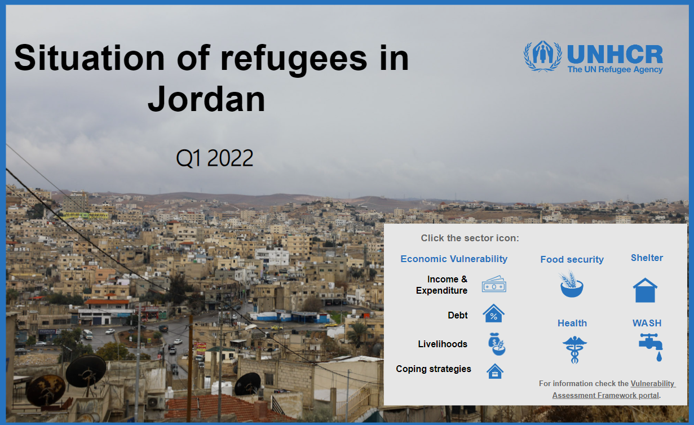

Survey dashboard in Power BI
I have created this Power BI dashboard during my tenure in UNHCR. It was used to present the analysis results for the first quarter of 2022 on the socio-economic situation of refugees in Jordan. Its purpose was to provide users with a detailed overview of the analysis, allowing them to filter indicators by location, nationality, and eligibility status. With the interactive features of Power BI, users can explore the data dynamically. The dashboard showcases various visualizations, including charts, graphs, and data representations, presenting a comprehensive and visually appealing overview of the socio-economic landscape. Key indicators such as employment rates, education levels, healthcare access, and living conditions are prominently featured.
Click on the picture for the project link.
